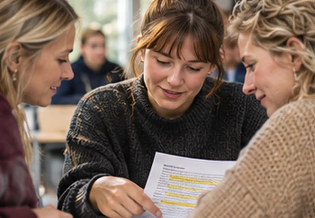

Fra iagttagelse til undervisning
Beskriv elevens handlinger under læsning, vælg en relevant øvelse og begrund, hvad du vil holde øje med i praktikken.
Arbejd videre som lærerstuderendeLæseblik er skabt til studerende, der arbejder med læsning, læsevanskeligheder og undervisning. Her er målet at blive bedre til at stille faglige spørgsmål, læse forskning kritisk, analysere med belæg og træffe velbegrundede didaktiske valg.

Et godt undervisningsmateriale kan være nyttigt. Men materialet fortæller ikke i sig selv, hvad en bestemt elev har brug for. Det kræver viden om eleven, om undervisningens mål og om den sammenhæng, materialet skal bruges i.
Derfor er Læsebliks guides og aktiviteter bygget til at støtte den studerendes faglige vurdering. Når du læser en forskningsartikel, skal du kunne skelne mellem resultat og fortolkning. Når du observerer en elev, skal du kunne skelne mellem det, du ser, og det, du tror forklarer det. Når du skriver en opgave, skal din konklusion kunne føres tilbage til dit materiale.
Det er samme faglige omhu, der er nødvendig i en vejledningssamtale, i en praktikuge og i et diplomprojekt. Opgaverne er forskellige, men spørgsmålene om belæg, metode og begrænsninger er vigtige i alle tre sammenhænge.
Beskriv elevens handlinger under læsning, vælg en relevant øvelse og begrund, hvad du vil holde øje med i praktikken.
Arbejd videre som lærerstuderendeVurder test og observationer samlet, undersøg alternative forklaringer og forbered spørgsmål, der hjælper kolleger videre.
Arbejd videre med læsevejledningAfgræns en problemstilling, begrund metodevalget og diskuter, hvad dine data kan og ikke kan sige.
Arbejd videre på diplomniveauLæseblik er et selvstændigt studieunivers, ikke en myndighedsvejledning. Materialer og fiktive cases kan hjælpe dig med at øve analyse og didaktisk ræsonnement, men de kan ikke erstatte lokale procedurer, en faglig vurdering eller gældende regler.
De enkelte guides har relevante kilder og forslag til videre læsning. Når du bruger dem i en studieopgave, bør du gå til originalpublikationen, undersøge metode og udgivelsesdato og citere den konkrete kilde frem for kun at henvise til Læseblik.
Begynd med det konkrete spørgsmål. Søg i Læsebliks guides, prøv en analyseøvelse, eller vælg den studievej, der passer til din uddannelse.